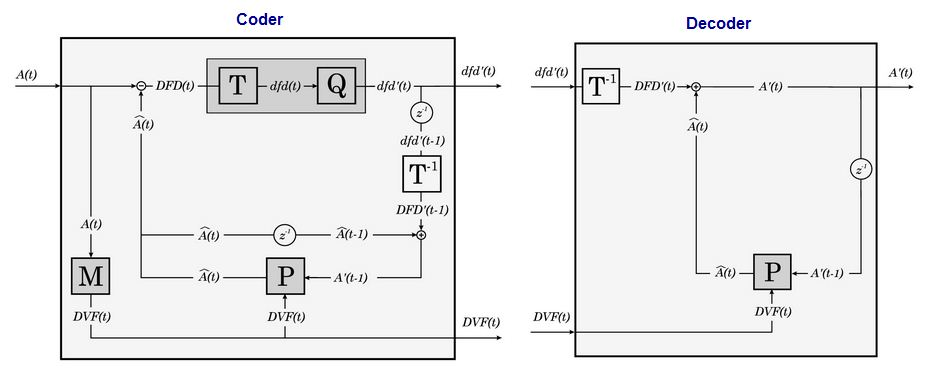
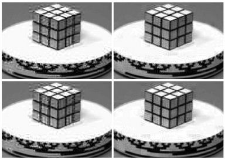
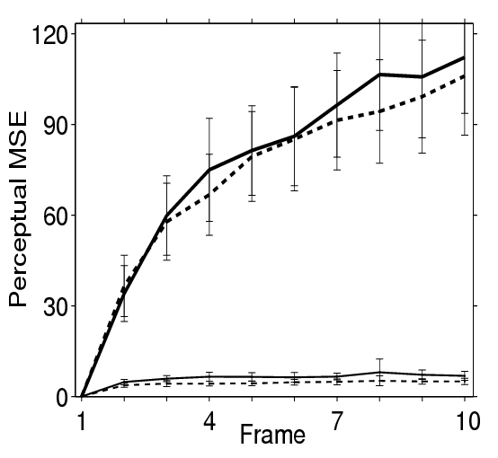

|
|
Motion Estimation and Video Coding Toolbox
Abstract
Motion Estimation:
Our approach to motion
estimation
in video
sequences was motivated by the general scheme of the current video
coders
with motion compensation (such as MPEG-X or H.26X [Musmann85, LeGall91,
Tekalp95]).
In
motion
compensation video coders the input sequence, A(t), is analized by a
motion
estimation system, M, that computes some description of the
motion
in the scene: typically the optical flow, DVF(t). In the motion
compensation
module, P, this motion information can be used to predict the
current
frame, A(t), from previous frames, A(t-1). As the prediction,
Â(t),
is not perfect, additional information is needed to reconstruct the
sequence:
the prediction error DFD(t). This scheme is useful for video
compression
because the entropy of these two sources (motion, DVF, and errors, DFD)
is significantly smaller than the entropy of the original sequence
A(t).
The coding gain can be
even
bigger if the
error sequence is analyzed, and quantized, in an appropriate transform
domain, as done in image
compression
procedures, using the transform T and the quantizer Q.

Conventional optical flow
techniques (based
in local maximization of the correlation by block matching) provide a
motion
description that may be redundant for a human viewer. Computational
effort
may be wasted describing 'perceptually
irrelevant
motions'. This inefficient behavior may also give rise
to
false alarms and noisy flows. To solve this problem, hierarchical
optical
flow techniques have been proposed (as for instance in MPEG-4 and in
H.263).
They start from a low resolution motion estimate and new motion
information
is locally added only in certain regions. However, new motion
information
should be added only if it is 'perceptually
relevant'. Our contribution
in
motion estimation is a definition of 'perceptually relevant motion
information'
[Malo98, Malo01a, Malo01b].
This definition is based on the entropy of the image
representation in the human cortex (Watson JOSA 87, Daugman IEEE
T.Biom.Eng.
89): an increment in motion information is perceptually relevant if it
contributes to decrease the entropy of the cortex representation of the
prediction error. Numerical experiments (optical flow computation and
flow-based
segmentation) show that applying this definition to a particular
hierarchical
motion estimation algorithm, more
robust and
meaningful
flows are obtained [Malo00b, Malo01a, Malo01b].
Video Coding:
As stated in the above scheme,
the basic
ingredients of motion compensation video
coders
are the motion estimation module, M, and the transform and
quantization
module, T+Q. Given our work in motion
estimation and in image
representation
for efficient quantization, the improvement of the current video
coding
standards is straightforward. See [Malo01b]
for a comprehensive review, and [Malo97b, Malo00a]
for the original formulation and specific analysis of the relative
relevance
of M and T+Q in the video coding process.
Here is an example [Malo00a, Malo01b]
of the relative gain in the reconstructed sequence (0.27 bits/pix)
obtained
from isolated improvements in motion estimation (M) and/or image
representation and quantization (T+Q).
MPEG1
(poor
M,
poor
Q)
Poor
M,
Improved
Q


MPEG-4 and H.263 (improved M, poor
Q) Improved M, Improved
Q
In the above distortion-per-frame
plot, thick
lines correspond to algorithms with poor (linear) quantization schemes
and thin lines correspond to improved (non-linear) quantization
schemes.
Dashed lines correspond to algorithms with improved motion estimation
schemes. The conclusion is that at the current
bit rates
an appropriate image representation and quantization is quite more
important
than improvements in motion estimation.
|
Related
Papers
Motion Estimation:
Modelos
Corticales
de
Percepción
del Movimiento
J. Malo and M. Simón.
Conferencia Invitada en la Jornada de Presentación de Aletheia
Nº5, Rector Peset, Universitat de València, Feb.
2008 
La percepción del movimiento: parte de lo que
pasa por tu cabeza en unos milisegundos.
J.
Malo
Aletheia,
CADE,
Universitat
de
València, Nº 5, pp 11-17, Dec 2007
What motion information is
perceptually
relevant?.
J.
Malo, J. Gutierrez, I. Epifanio
Journal
of
Vision,
1(3),
309a,
http://journalofvision.org/1/3/309,
DOI 10.1167/1.3.309 (2001)
Perceptually weighted
optical flow
for motion-based segmentation in MPEG-4 paradigm.
J.Malo,
J.Gutierrez, I.Epifanio and F.Ferri
Electronics
Letters
,
Vol.36,
20,
pp.1693-94,
(2000)
Splitting criterion for
hierarchical
motion estimation based on perceptual coding.
J.Malo,
F.Ferri, J.Albert, J.M.Artigas
Electronics
Letters
,
Vol.
34,
6,
pp.541-543. (1998)
Variable-size BMA for
motion estimation
using a perceptual-based splitting criterion.
F.Ferri,
J.Malo, J.Albert, J.Soret
Proc. IEEE Int. Conf.
Pat.
Recog. 98.
Vol. I, pp. 286-288. (1998)
Video Coding:
Perceptual feed-back
in
multigrid motion
estimation using an improved DCT quantization.
J.Malo,
J.Gutierrez,
I.Epifanio,
F.Ferri,
J.M.Artigas
IEEE
Transactions
on
Image
Processing.
Vol.
10, 10, pp. 1411-1427 (2001)
Importance of
quantizer
design compared
to optimal multigrid motion estimation in video coding.
J.Malo,
F.Ferri,
J.Gutierrez,
I.Epifanio
Electronics Letters , Vol. 36, 9, pp. 807-809 (2000)
Adaptive
motion
estimation
and
video
vector
quantization based on spatio-temporal non-linearities of human
perception.
J.Malo,
F.Ferri,
J.Albert,
J.M.Artigas
Lecture Notes in
Computer
Science,
Springer Verlag. Vol.1310, pp.454-461 (1997)
|
Download Code
Motion_estimation_and_Video coding_code.zip 
|
|
|